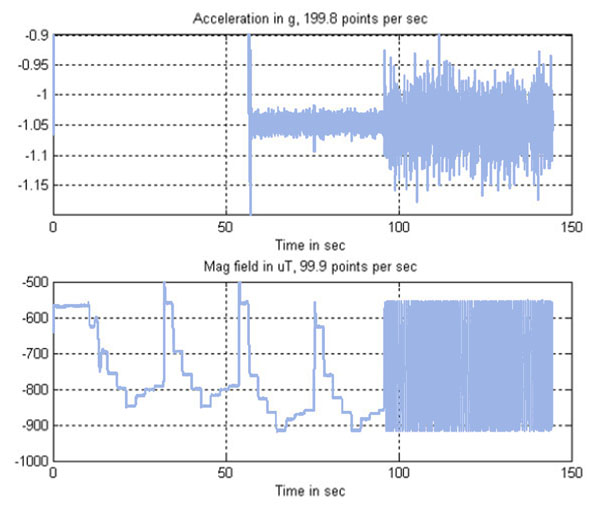
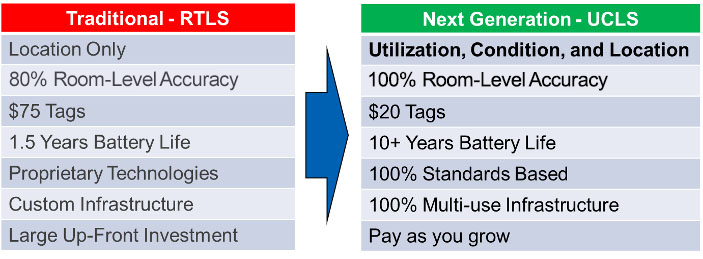

In industries such as Manufacturing and Agriculture, Internet of Things (IoT) technology is used to gain insight and better manage expensive and critical pieces of equipment. In particular, studies have shown that IoT technology can be successfully used to transition from out-dated asset management models such as “Run to Failure” to more effective models based on measured device utilization and condition, along with predictive analytics. In hospitals, the state of managing clinical equipment has not yet evolved.
Current IoT solutions for clinical assets known as RTLS (Real-Time Location Systems) employ simple wireless beacons to help locate equipment in the hospital. While this saves small bits of time for nursing and other staff, it offers very soft ROI.
UCLS is a totally breakthrough approach that stands for “Utilization, Condition and Location System”. UCLS tags use Sensors and Machine Learning Algorithms to determine and report on the Usage State (Active vs. Idle) and Condition (Normal vs. Anomalous) of Medical Devices -- in addition to Location.
Examples of sensors include vibration, magnetic field, EMI, and temperature. Here is an example of vibration and magnetic sensor data from an infusion pump operating in continuous basal then bolus mode.

Machine Learning algorithms are used to process this raw sensor data and convert it to insightful data on the operating state and condition of the device.
This Utilization and Condition data is then used to provide high-level actionable insights such as the following:
In addition to introducing this break-through sensor technology, UCLS also fixes the technical pain-points associated with previous generation RTLS solutions:

In addition to data collected from the advanced UCLS tags, where appropriate the UCLS solution also integrates data on device usage and condition from other “sources of truth”, including:
In the end, UCLS pays for itself in savings to the hospital in the areas of equipment purchase/rentals and maintenance. But more importantly, these savings can be re-invested into enhancing patient outcomes and patient and staff satisfaction.